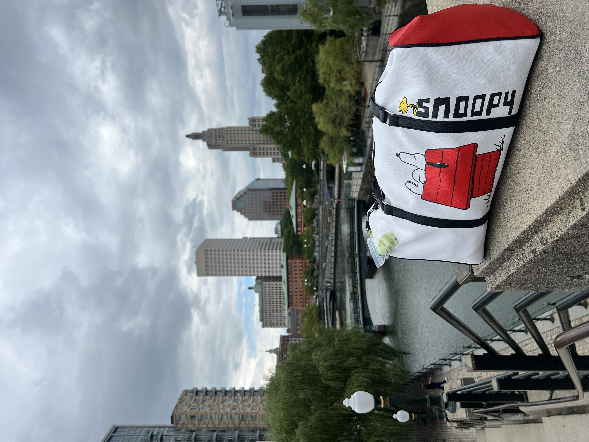

Travel
I love traveling because it gives me perspective, curiosity, and a deeper appreciation for different cultures and ways of living. I have been to more than 10 countries, and each trip has taught me something new about resilience, independence, and seeing the world in a broader way. One of my most meaningful experiences was traveling solo to Iceland, where I had the chance to explore new places on my own and build confidence.